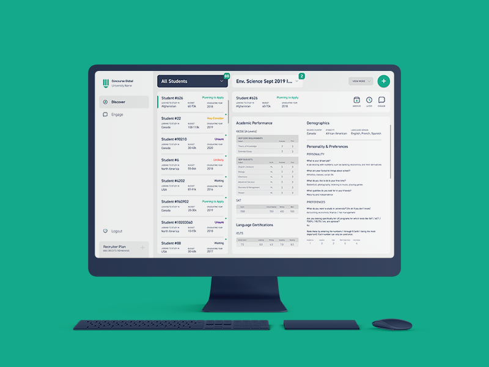

PORTFOLIO WEBSITE
PROJECT DETAILS
| Development | 2015-2019 (Continuous) |
| Status | Live (Version 2.0) |
| Platforms | Responsive Website |
| Roles | UX Designer Graphic Designer Front-End Web Developer |
| Software Tools | Sketch GitHub Adobe Photoshop Adobe Illustrator InVision Studio Atom |
{kind=link}
{kind=link}
{kind=link}
{kind=link}
{kind=link}
PROJECT DESCRIPTION
This website came into inception during my twelfth grade year, before I even know what ‘UX Design’ was and certainly before I knew what I was doing. At that point, I had primarily been doing iconography for my jailbroken iPhone 6+ and making school yearbooks; but I had an idea that I’d have this website, this place where I could showcase the work I had done and try and justify making full time design a career path I could seriously consider. Now about 4 years later at the time of writing, and I am updating my portfolio to include new work as I study what it means to be a designer, taking foundations I set for myself and transitioning them into tangible evidence that I am a creative problem solver, and presenting that journey in a way that is pleasing to look at and communicates the value of my work to potential partners.
But enough self-indulgence… if you’re reading this, you’re visiting my portfolio website! The site has been online for a number of years as mentioned, and is on it’s second (or third, depending on how you score them) major iteration.
Some key considerations that I keep in mind when building the website and its pages include information architecture, aesthetic consistency / clarity, discoverability and overall usability.
Information Architecture
With simplicity and discoverability as the cornerstones of this site, I've set out to keep things clearly organized while allowing for depth when necessary. The navigation in the header and footer is intentionally simple, far from the initial bank of links it once was. It's meant to guide users through developing an understanding what I do and who I am before ultimately viewing my work and having the chance to connect with me. This navigation scheme is the result of a number of A/B tests and consultations with peers and industry professionals. Everything about the site has been carefully considered and iterated over the years; the sorting option on the portfolio page is meant to allow potential partners to quickly find the type of work I’ve done that aligns with their needs while also encouraging the user to view other projects, and is just one example of the type of consideration I’ve put into things like page layouts, sorting options and discoverability.Aesthetic Consistency / Clarity
Many (if not all) of the projects displayed on this site are labours of love, the result of hours and hours of careful consideration, thought, planning and execution. So naturally, a goal of mine has always been to present them in a way that compliments their content without distracting from the core of what they do. Often times I will take my own product photography for any tangible items that make the cut such as yearbooks and other print work, however I often utilize clean, simple .psd mockups to showcase my work. This promotes consistent, enticing imagery and ultimately leads viewers to individual project pages where I can showcase more straight-to-the-point screenshots and display images without the fluff. I try and showcase as much process as possible in these images, although this is an area of improvement that I am actively working to be better at. The colour selections for showcase images are often directly taken from the palettes of each respective project. I use a font (Proxima Rounded) for the page that reflects my generally playful, rounded design stylings and utilize font spacing at the golden ratio to maintain ease of reading.Discoverability / Usability
This website is built utilizing Bootstrap design guidelines (for those of you reading who don't speak CSS, that means a 12 column grid further divisible in multiples of 12). The thinking behind the utilized page layouts is to pack information at a density that informs the user of the scope of depth of work that I do without being particularly overwhelming; the density of content is something I often need to evaluate with any project I work on. As I move forward I continue to attempt to break up project descriptions into more easily digestible subsections, although I do need to back-port this consideration to previously written project descriptions. Most pages feature links to other projects, easing the user in their movement from project to project, and links are provided in the header and footer of each page to the key categories of the site to encourage users to look around. I’ve already touched on navigation above so I won’t spend too much time on it, but there are other usability considerations including load times and image clarity that factor in to the work I do on this site.Potential Future Improvements
If time was an infinte resource I would like to go back and re-write a majority of the project descriptions on the site, more carefully outlining my creative process and sub-sectioning the content for easier reading. I'd also like to better utilize SEO best practices, but that's a tedious manual process as the site is hosted on Github Pages. Overall the site as you see it is the result of many an iteration and I've worked through a majority of the adjustments I'd hoped to make over the years.RELATED PROJECTS

Redesigned a dashboard enabling users to compare dense data sets in a variety of subjects with ease and clarity.
| Developed | 2019 |
| Client | World Council on City Data (Coursework) |
| Roles | UX Design, UI Design |
| Status | Presented to Client |

Addressed usability concerns that comprise the interactive dining table experience for senior-level interaction design course.
| Developed | 2019 |
| Client | Coursework |
| Roles | UX Design, UI Design |
| Status | Completed Proposal |

Designed a web dashboard interface for university recruiters to connect with and compare international applicants.
| Developed | 2018 |
| Client | Concourse Global |
| Roles | UX Design, UI Design |
| Status | Launched |